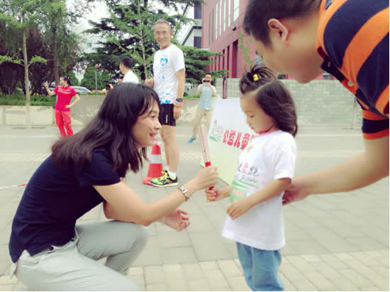

妈妈的心理健康对宝宝有着重要的影响，为了下一代的快乐，学会控制和平抚自己的情绪已成为妈妈的必修课之一。
推荐中国第一个每晚临睡前用语音形式对大众进行心灵抚慰、传播心灵正能量的微信公众号——青音（微信号：sweetamily，或微信公众号搜索“青音”）。
青音以女性特有的细腻、敏感和自身独到地对生活的体察与热爱，每晚临睡前，60秒的温馨语音帮助妈妈抚平焦躁不安的情绪、远离低落和忧郁，给妈妈和宝宝一个安睡的心灵港湾：生命关怀，陪伴一路！

她是中央人民广播电台资深情感节目主持人，也是知名心理专家。作为中国大陆唯一一位在心理治疗师和节目主持人两个专业领域跨界传播的知名媒体人，她是中国的主持人里最懂心理治疗的人，也是中国的心理专家里最会主持节目的人。在夜色中，她的声音陪伴了全国听众15年。
多年来，青音一直关注女性和儿童的心理健康：她是“中国乡村儿童大病医保公益基金”的发起人之一，也是“保卫儿童签名行动”活动发起人之一；她曾为“天使爱跑公益儿童跑”活动开跑致辞，也曾为“泊藏珠宝·关爱儿童珠宝义拍”活动捐献珠宝并助拍；她在录制“免费午餐”《柔软改变中国》语音版时，曾无数次为留守儿童流下眼泪……